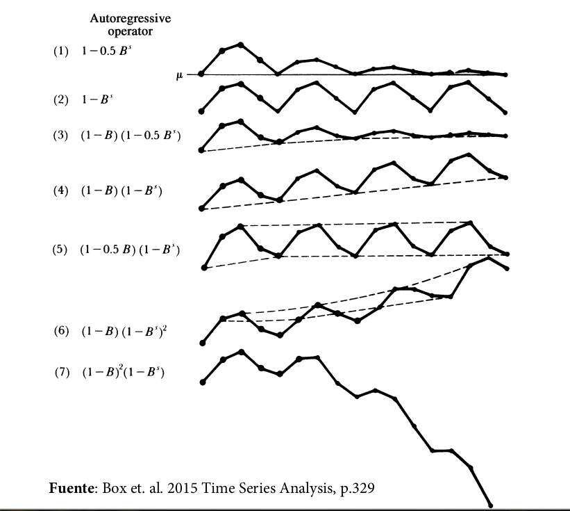

import numpy as np
import pandas as pd
import matplotlib.pyplot as plt
plt.style.use('seaborn-talk')
from statsmodels.graphics.tsaplots import plot_acf, plot_pacf
from statsmodels.tsa.statespace.sarimax import SARIMAX
6.2. Modelo ARIMA estacional¶
En un modelo ARIMA estacional, términos AR y MA predicen \( y_{t} \) usando valores de datos y errores con rezagos que son múltiplos de \(s\)
Por ejemplo, con datos trimestrales (s=4),
un modelo autorregresivo estacional de primer orden usa \(y_{t-4}\) para predecir \(y_{t}\), mientras que uno de segundo orden usa \(y_{t-4}, y_{t-8}\) para ello.
un modelo de media móvil estacional de primer orden usa \(\epsilon_{t-4}\) para predecir \(y_{t}\), mientras que uno de segundo orden utiliza \(\epsilon_{t-4}, \epsilon_{t-8}\).
Por ejemplo, si quisiéramos pronosticar el número de pasajeros extranjeros que viajarán por el SJO en agosto 2020, tiene mucho sentido modelar ese valor en función del número de pasajeros extranjeros que viajaron por SJO en agosto de años anteriores.
# read data from previous example
sjodatos =pd.read_pickle("datos/SJO-pasajeros.pickle")
sjodatoscuadro = sjodatos.unstack()
sjodatoscuadro['extranjeros'].round(1)
| 1 | 2 | 3 | 4 | 5 | 6 | 7 | 8 | 9 | 10 | 11 | 12 | |
|---|---|---|---|---|---|---|---|---|---|---|---|---|
| 2011 | 116.3 | 105.4 | 128.9 | 103.1 | 82.7 | 88.0 | 103.3 | 102.9 | 64.6 | 62.6 | 77.5 | 90.3 |
| 2012 | 115.8 | 108.1 | 130.9 | 106.0 | 82.2 | 89.1 | 105.9 | 105.7 | 67.8 | 60.4 | 79.3 | 92.4 |
| 2013 | 122.9 | 109.6 | 133.0 | 108.5 | 85.3 | 95.0 | 110.3 | 112.8 | 70.0 | 67.3 | 83.5 | 107.7 |
| 2014 | 132.3 | 120.9 | 146.3 | 111.9 | 93.1 | 96.4 | 111.4 | 116.8 | 71.7 | 67.3 | 85.3 | 104.9 |
| 2015 | 137.2 | 122.7 | 143.8 | 122.8 | 96.5 | 105.1 | 121.5 | 129.9 | 79.6 | 76.4 | 100.5 | 122.6 |
| 2016 | 149.2 | 141.8 | 161.3 | 132.0 | 108.1 | 113.3 | 134.6 | 138.7 | 84.5 | 83.2 | 102.4 | 124.2 |
| 2017 | 153.6 | 145.1 | 179.0 | 148.7 | 119.4 | 126.8 | 141.0 | 142.8 | 97.9 | 90.2 | 117.1 | 135.0 |
| 2018 | 165.7 | 161.1 | 189.4 | 161.3 | 127.4 | 134.1 | 148.9 | 156.0 | 100.3 | 93.9 | 120.4 | 140.7 |
| 2019 | 185.3 | 170.4 | 206.7 | 157.0 | 128.2 | 137.0 | 151.4 | 156.4 | 101.2 | 102.0 | 122.1 | 153.3 |
Un modelo estacional puro¶
Año |
May |
Jun |
Jul |
Ago |
|---|---|---|---|---|
2016 |
\(y_{t-36}=138.7\) |
|||
2017 |
\(y_{t-24}=142.8\) |
|||
2018 |
\(y_{t-12}=156.0\) |
|||
2019 |
\(y_{t-3}=128.2\) |
\(y_{t-2}=137.0\) |
\(y_{t-1}=151.4\) |
\(y_{t}=156.4\) |
En general, un modelo puramente estacional puede representarse por
o bien, en términos de polinomios de rezagos
Diferenciación estacional¶
La diferenciación estacional se define como la diferencia entre un valor \( y_{t} \) y un valor rezagado un múltiplo de \(s\) períodos.
Por ejemplo: trimestral : \(\Delta_{4} y_{t} = \left(1-\Lag^{4}\right)y_t = y_t - y_{t-4}\)
- mensual
\(\Delta_{12} y_{t} = \left(1-\Lag^{12}\right)y_t = y_t - y_{t-12}\)
Nótese que siguiendo esta notación \( \Delta y_t = \Delta_1 y_t \). Pero
Warning
Un modelo ARIMA para observaciones de la misma estación¶
En general, podríamos plantear un modelo ARIMA para observaciones de una sola estación (mes, trimestre)
Es usualmente razonable asumir que esta misma relación la cumplen las observaciones de la estación anterior
En general, los errores de estas relaciones \(\varepsilon_{t}, \varepsilon_{t-1}\) podrían estar correlacionadas, por lo que en principio podemos plantear el modelo ARIMA:
donde \(\epsilon_{t}\) es ruido blanco.
El modelo SARIMA¶
Asumiendo que el proceso ARIMA de cada estación es invertible obtenemos
Este modelo se denomina \(\alert{\text{SARIMA}(p,d,q)\times(P,D,Q)_s}\).
\(\text{SARIMA}(0,0,0)\times(0,1,0)_4 = \text{SARIMA}(0,1,0)_4\)
\(\text{SARIMA}(2,0,0)_4 = \text{SAR}(2)_4\)
\(\text{SARIMA}(0,0,3)_4 = \text{SMA}(3)_4\)
\(\text{SARIMA}(0,1,1)\times(0,1,1)_4\)
\(\text{SARIMA}(1,0,0)\times(0,1,1)_4\)
Identificación de un modelo SARIMA¶
La identificación de modelos estacionales es más difícil que la identificación de modelos no estacionales por dos razones:
Muchas series estacionales exhiben también patrones no estacionales y por lo tanto las FAC y las FACP estimadas contienen ambos patrones.
No hay muchas correlaciones en valores \(k\) múltiplos de \(s\). Por ejemplo, en una serie mensual podríamos contar únicamente con \(k = 12\), \(k = 24\) y \(k = 36\)
En la práctica, cuando se tienen dudas, se utilizan herramientas que automatizan esta selección de parámetros a partir de criterios de selección.
El correlograma de la serie de movimientos de pasajeros extranjeros en SJO sugiere que la serie tiene un componente estacional.
def correlogramas4(serie, residencia, func):
fig, axs= plt.subplots(2,2, figsize=[12,5], sharex=True, sharey=True)
opts = dict(lags=24)
if func is plot_pacf:
opts['method'] = 'ols'
func(serie, **opts,ax=axs[0,0], title='$y_t$');
func(serie.diff(1).dropna(), **opts, ax=axs[0,1],title='$\Delta y_t$');
func(serie.diff(12).dropna(), **opts, ax=axs[1,0],title='$\Delta_{12}y_t$');
func(serie.diff(1).diff(12).dropna(), **opts, ax=axs[1,1],title='$\Delta\Delta_{12}y_t$');
for ax in axs.flat:
ax.set(xlim=[-0.5,24.5], xticks=np.arange(0,25,6))
pp = 'parcial' if (func is plot_pacf) else ''
fig.suptitle(f'Correlogramas {pp} de cantidad de pasajeros {residencia} en SJO', size=18)
return fig
extranjeros = pd.DataFrame(np.log(sjodatos['extranjeros'].values), index=pd.period_range('2011-01', '2019-12', freq='M'))
correlogramas4(extranjeros, 'extranjeros', plot_acf);
Al usar una herramienta de selección de modelos statsmodels.tsa.x13.x13_arima_select_order en Python se selecciona el modelo \(\text{SARIMA}(0, 1, 1)\times(0, 1, 1)_{12}\).
mod_extranjeros = SARIMAX(extranjeros, order=(0,1,1), seasonal_order=(0,1,1,12)).fit()
mod_extranjeros.summary()
| Dep. Variable: | 0 | No. Observations: | 108 |
|---|---|---|---|
| Model: | SARIMAX(0, 1, 1)x(0, 1, 1, 12) | Log Likelihood | 194.101 |
| Date: | Tue, 23 Mar 2021 | AIC | -382.202 |
| Time: | 16:09:06 | BIC | -374.540 |
| Sample: | 01-31-2011 | HQIC | -379.106 |
| - 12-31-2019 | |||
| Covariance Type: | opg |
| coef | std err | z | P>|z| | [0.025 | 0.975] | |
|---|---|---|---|---|---|---|
| ma.L1 | -0.6109 | 0.087 | -7.024 | 0.000 | -0.781 | -0.440 |
| ma.S.L12 | -0.7632 | 0.117 | -6.520 | 0.000 | -0.993 | -0.534 |
| sigma2 | 0.0009 | 0.000 | 6.349 | 0.000 | 0.001 | 0.001 |
| Ljung-Box (L1) (Q): | 0.05 | Jarque-Bera (JB): | 0.23 |
|---|---|---|---|
| Prob(Q): | 0.83 | Prob(JB): | 0.89 |
| Heteroskedasticity (H): | 1.56 | Skew: | 0.09 |
| Prob(H) (two-sided): | 0.21 | Kurtosis: | 3.16 |
Warnings:
[1] Covariance matrix calculated using the outer product of gradients (complex-step).
El modelo estimado es
Los resultados de la tabla anterior muestran que:
Los coeficiente estimados son significativos.
Los residuos del modelo…
parecen no estar autocorrelacionados: el valor \(p\) del estadístico \(Q\) de Lung-Box es 0.19.
parecen ser normales: la asimetría es 0.09, la kurtosis es 3.16, y el valor \(p\) de la prueba de Jarque-Bera es 0.89.
Por ello, podemos pensar que el modelo estimado es una buena representación de los datos.
La expresión
puede utilizarse recursivamente para generar pronósticos.
def plot_forecast(modelo, serie, residencia, ax):
fcast = modelo.get_forecast('2020-12')
ci = np.exp(fcast.conf_int())
np.exp(fcast.predicted_mean).plot(ax=ax)
ax.fill_between(ci.index,'lower y', 'upper y', data=ci, alpha=0.5)
np.exp(serie).plot(ax=ax, legend=False)
ax.set(title=f'Pronóstico de pasajeros {residencia} en aeropuerto SJO')
return ax
fig, ax = plt.subplots(1,1, figsize=[9,4])
plot_forecast(mod_extranjeros, extranjeros['2015':], 'extranjeros', ax)
ax.set(ylabel='miles de pasajeros');
Pronosticando un modelo SARIMA¶
Si expandimos los polinomios del proceso \(\text{SARIMA}(p,d,q)\times(P,D,Q)_s\)
el resultado será un polinomio de grado \(p+Ps+d+D\) del lado izquierdo y uno de grado \(q+Qs\) del lado derecho.
Para horizontes de más allá de \(q+Qs\) períodos, la dinámica de estos pronósticos estará gobernada únicamente por la ecuación en diferencia homogénea
